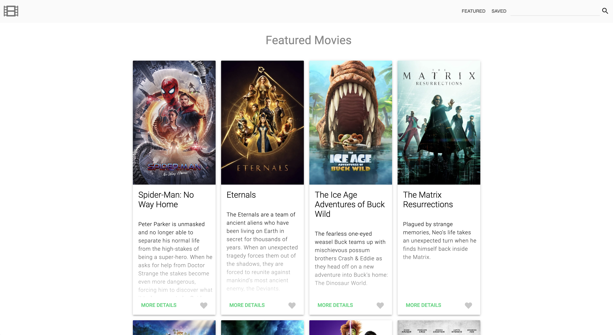
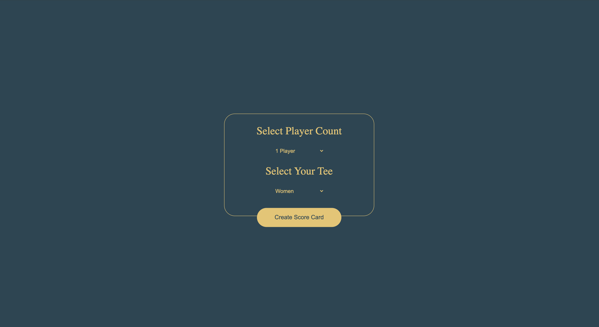

Projects
OnStage

Tech
Firebase TSWhat I Learned
OnStage was a massive project a group of three accomplished in only a week. During this one week sprint, we implemented Firebase on the fly. I was all over the place on this project. I set up Firebase with the context API as well as designed the landing page created the logic and design for the login, signup, user profile, and theater profile. This project cemented my knowledge of async-await.
Movie App
Tech
What I Learned
The movie application was the first group project I had to do. I learned a ton from completing this project. One of the things that stands out the most is that my partner and I tried for the first week to make a SPA which, at the time, we had no idea tools like react existed for this purpose. This is also the point in time when I started using more modern CSS units to make my application responsive.
Golf Scorecard
Tech
What I Learned
This project was my first foray into asynchronous JavaScript. I fetched data from an API and used .then() to process the data once the promise had been fulfilled. I also learned how to style various HTML elements such as tables, selects, and tds, amongst other things. Another interesting thing I did in this project was utilizing HTML templates to dynamically create rows for each player without having to write all of the code in JavaScript.